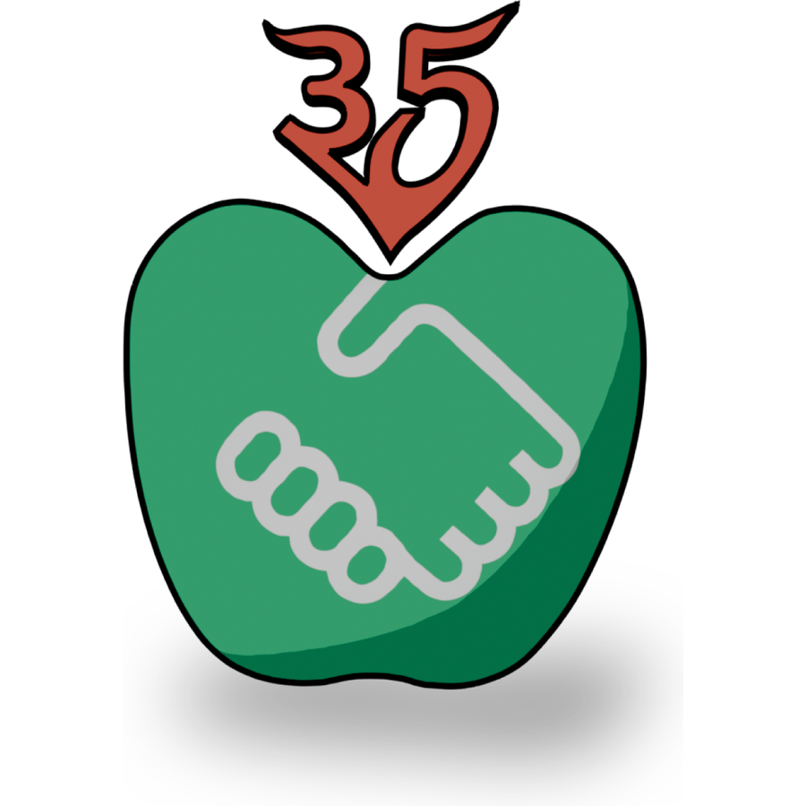
Big Apple Greeter
Turning 35
A 35 year old New York nonprofit with a logo worth keeping, a website that asked visitors to please use a laptop, and an anniversary to mark. This is the long version of that project: what changed, what I deliberately left alone, and the reasoning behind both. Every screenshot here is a real page, not a comp.
Section 1The mark
Thirty years of equity, rebuilt as an object that can move, and set beside the name in three lockups.
1 · The evolution
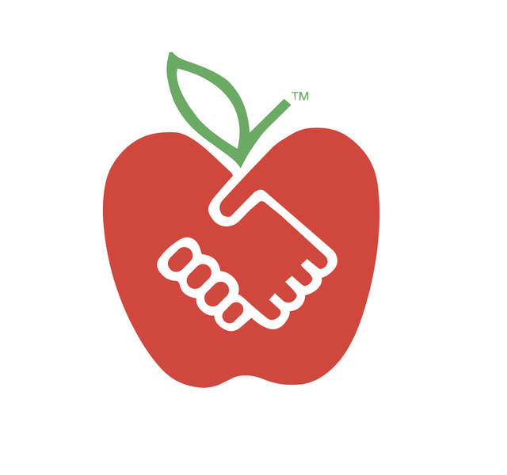
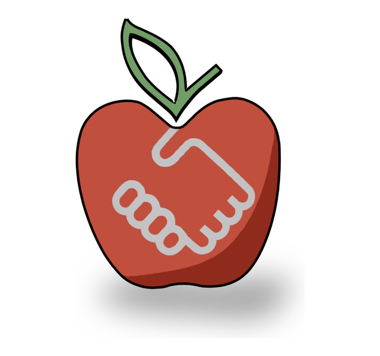
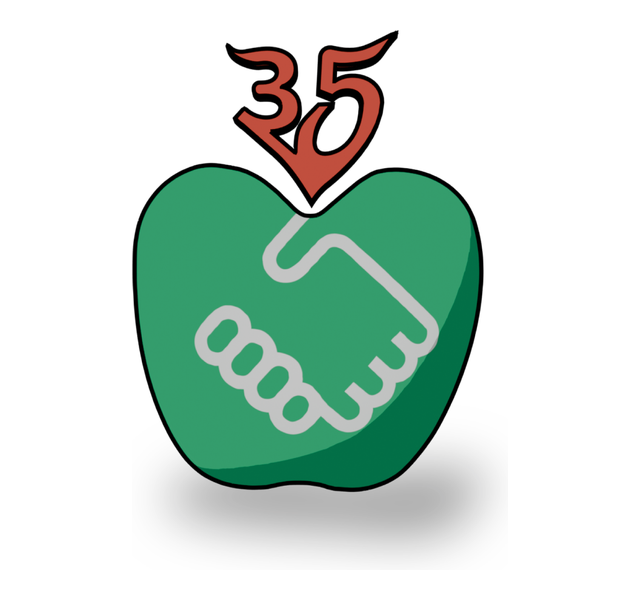
The starting point was a logo that did not need saving. A handshake cut into an apple, drawn well enough in 1993 that it still holds up. So the brief I ended up arguing for was not a redesign. It was a refresh with one job: mark 35 years without throwing away the recognition built over the previous 34.
Left is the apple as it has stood for three decades. The file doing that job on the live site was a PNG named “Screen Shot 2020-07-14”, which tells you most of what you need to know about the state of the asset library.
Middle is the same apple rebuilt as a true three-dimensional object, cel-shaded so it keeps its flat character. The handshake and the leaf sit exactly where they always sat. The equity is untouched. What changed is the resolution of the thinking behind it.
Right is the anniversary mark: the leaf becoming a 35, the apple turning jade green for the 35th anniversary stone.
On the homepage these are not three pictures but one continuous turn, the apple rotating as the old mark becomes the new one. Because it renders to transparent frames, any format needed later (a square social crop, a vertical story, a print-quality still) is a render rather than a new commission. That mattered more than it sounds: this is an organization that cannot phone a designer every time it needs a new crop.
2 · The lockups, typeset
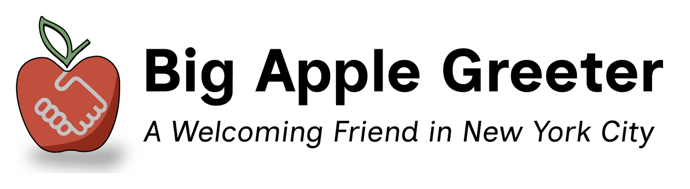
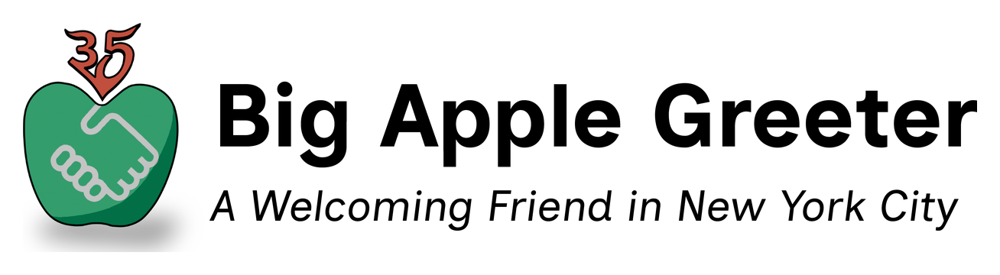
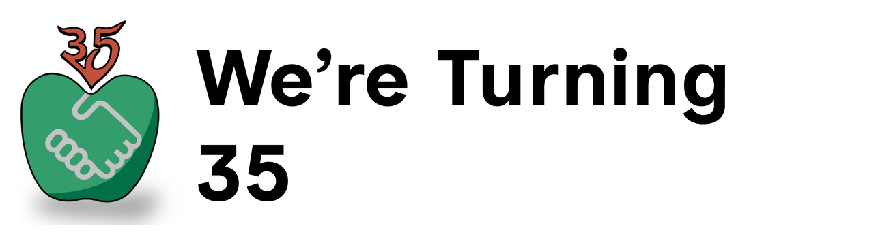
The mark with the name beside it, in the three combinations the year actually needs: everyday, anniversary, campaign. The anniversary lockup is built to sunset gracefully, leaving the refreshed apple as the permanent mark once the year is over.
All three are set in Inclusive Sans. It is a free Google Font, so licensing never becomes a line item, but that is not really the argument for it. It was drawn for legibility: open apertures, generous sidebearings, letterforms that do not collapse into one another at small sizes or in a second language. For an organization whose entire proposition is that everyone is welcome, a typeface engineered for exactly that beats a fashionable one.
Arial stayed available as a fallback, since it is already on every machine the staff use. During the decision I built a switch into the prototype so the committee could compare typefaces across real pages rather than on swatches, which turned a taste argument into something people could actually see.
Section 2The system in use
Eight pages, before and after. What existed on the left, the new work on the right. Every image is a real screenshot, desktop and mobile.
1 · The homepage
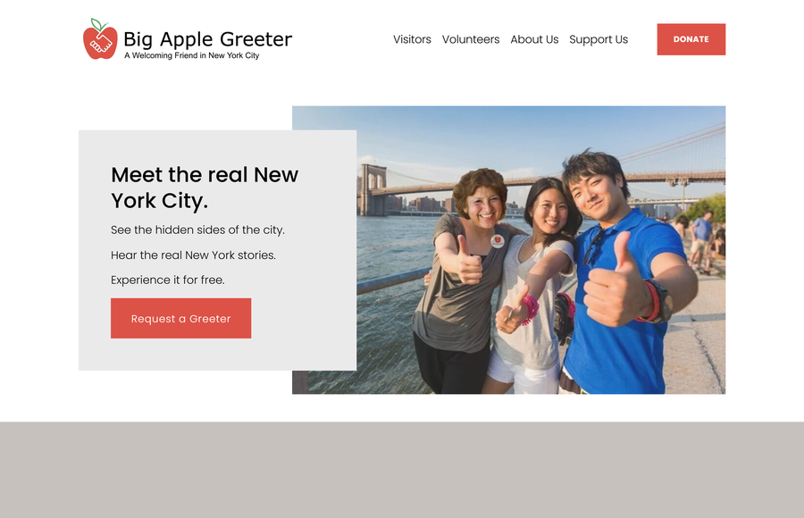
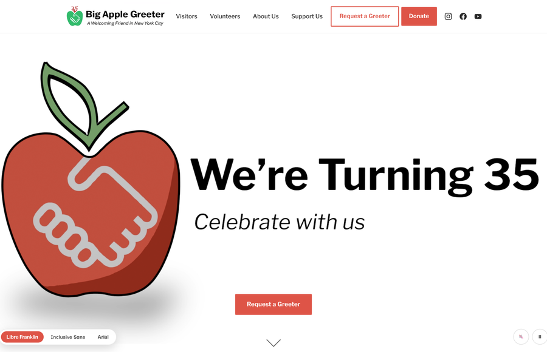
The anniversary leads with the line, “We’re Turning 35. Celebrate with us.” and the mark itself as the hero, animated in place. Request a Greeter moves into the persistent nav, so it is one click from anywhere on the site instead of buried where it used to sit.
2 · About us
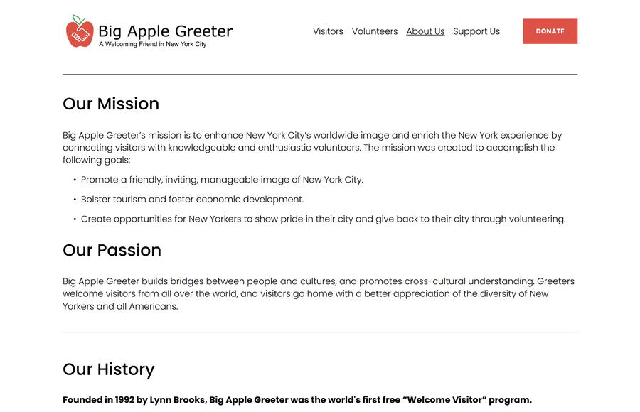
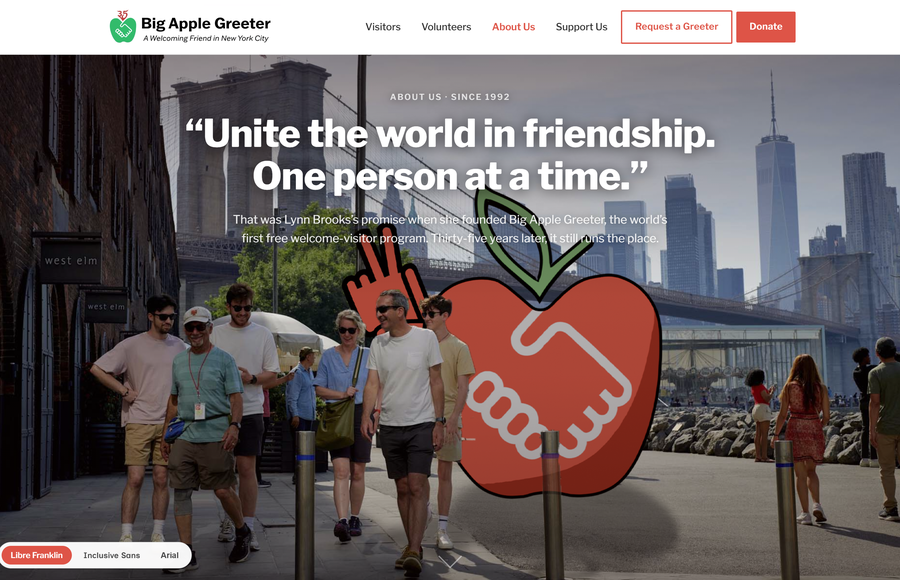
Three text pages collapse into one story. It opens on founder Lynn Brooks’s own promise, “Unite the world in friendship. One person at a time.” set over a real greet in progress, with the mission, the history and the board following in a single scroll. Her line does the work the mission statement had been failing to do for years.
3 · Visitors
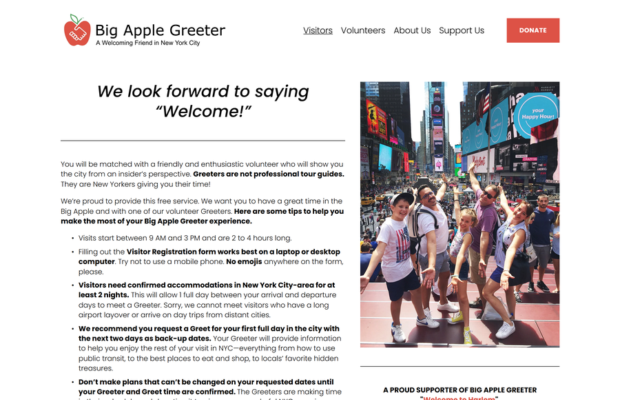
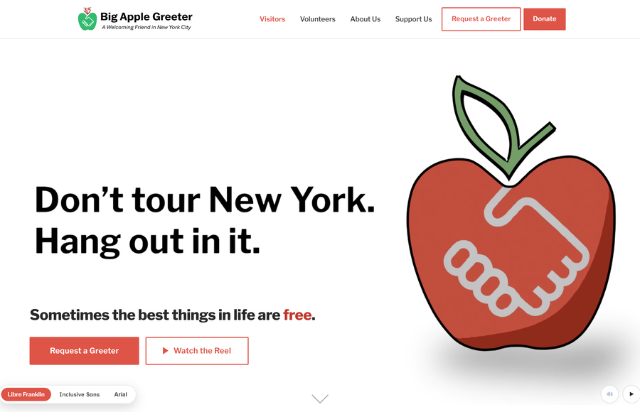
“Don’t tour New York. Hang out in it.” replaces a page of ten rules, one of which was “no emojis anywhere on the form, please.” The rules did not disappear; they moved into the form itself, where they are enforced instead of requested. Copy carries the invitation, the interface carries the constraints.
4 · Volunteers
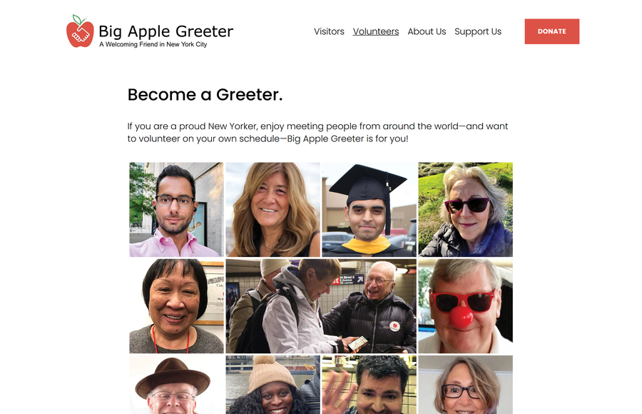
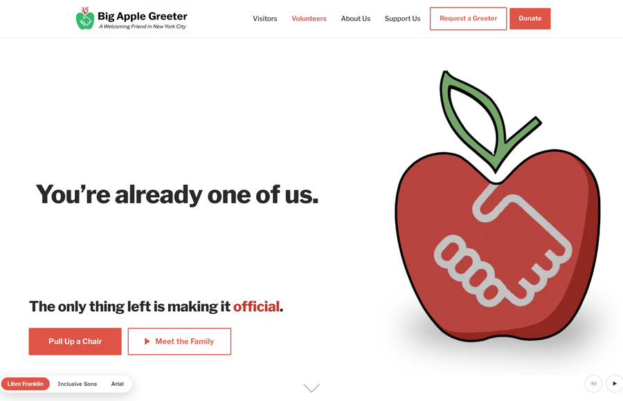
“You’re already one of us. The only thing left is making it official.” The bullet list becomes a film. “Meet the Family” plays it, and “Pull Up a Chair” opens a real application on the organization’s own domain rather than a third-party form.
5 · Support us
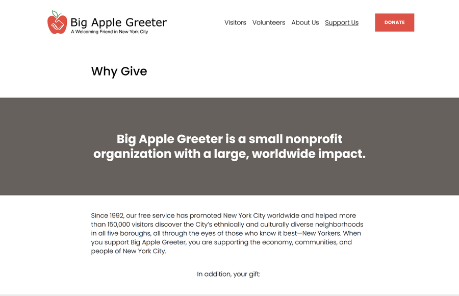
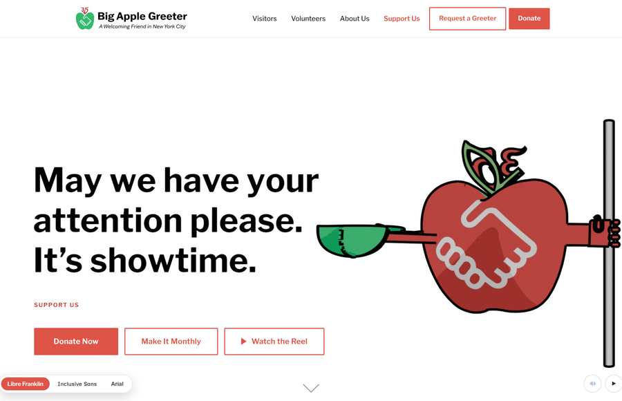
Three pages of paragraphs become one showman’s ask, “May we have your attention please. It’s showtime.” with every way to give up front and Lester Barnett’s story closing the page. Asking for money is a performance, so the page finally behaves like one.
6 · Requesting a Greeter
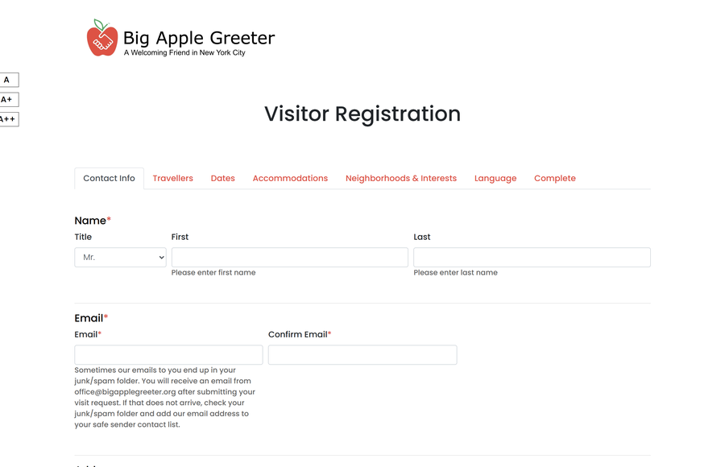
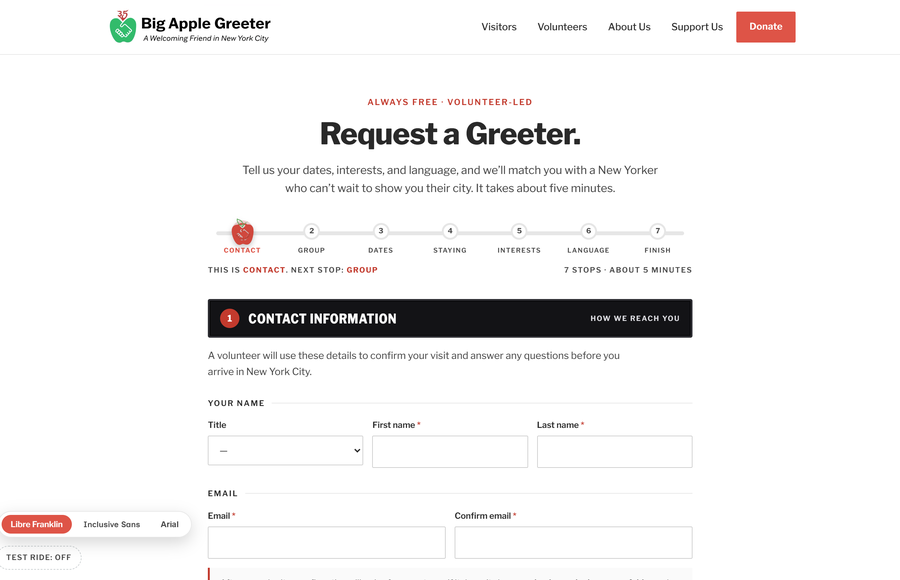
The old form lived on a separate .net site: different look, different domain, and a note advising that it “works best on a laptop.” The new one is a seven-stop subway ride, about five minutes, phone first, checking the rules as you go rather than listing them first and hoping. The subway line is the navigational metaphor and the progress indicator at the same time, which is the sort of thing that only works if you are in a city where everyone already reads that diagram fluently.
7 · Applying to volunteer
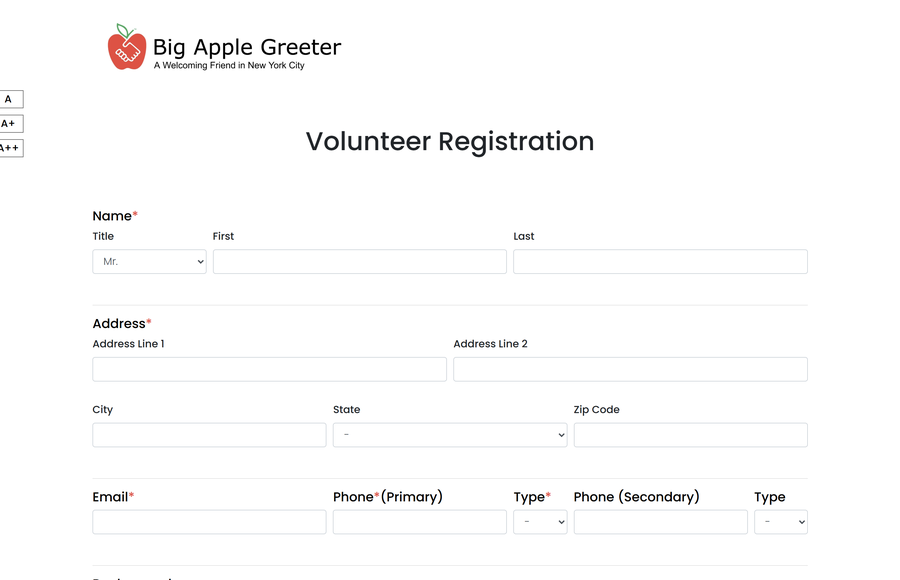
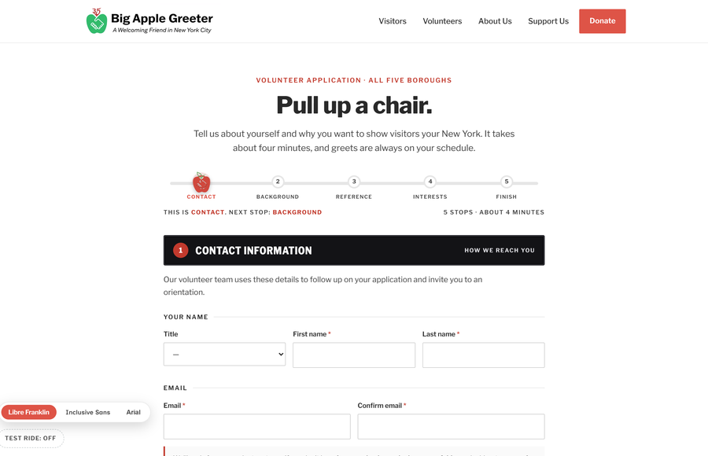
“Pull up a chair.” The same subway treatment, five stops and about four minutes, so the visitor journey and the volunteer journey finally read as one organization. First click to Welcome to the Family.
8 · On a phone
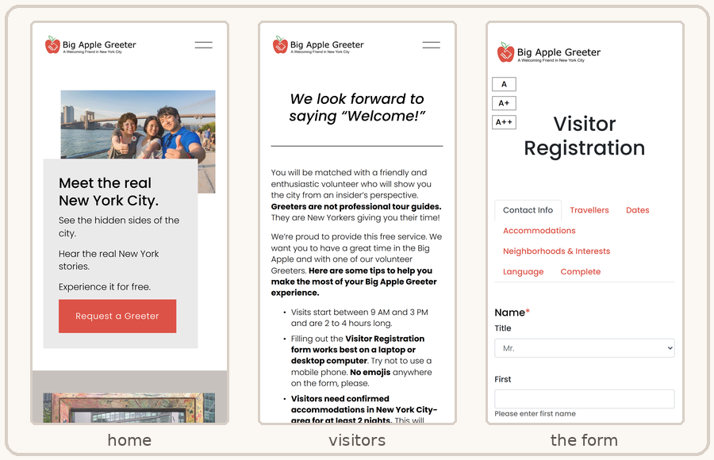
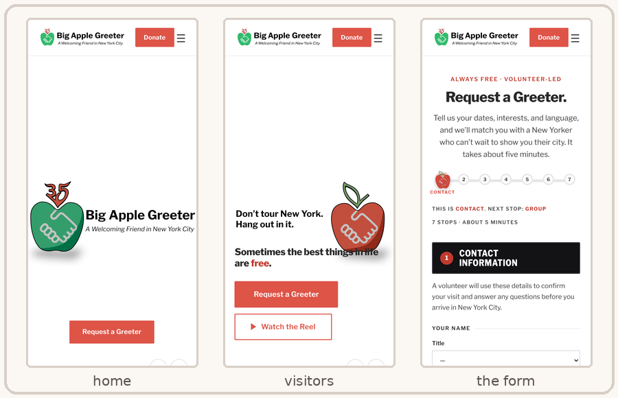
This is the change most visitors will actually feel, because people plan trips on their phones. On the old site the visitors page asked for a laptop, and the form arrived with its step tabs collapsed into a pile of links. On the new one the same journey is one page per topic, read with one thumb, and the subway stepper fits a phone screen as though it had been drawn for one. It had been.
Section 3The campaign
One half of this is already built and running. The other half is an afternoon in a train station that would fill it.
1 · The living map
The homepage pairs a carousel of greeter videos with a live map. Each fifteen-second clip drops its own pin, and the first ones are already up: Penn Station, the United Nations, Astoria. The final slide is a QR code set inside the apple, taking a phone straight to the videos. A partner shop puts that sticker in its window, and a greeter’s clip plays right at the spot they are talking about.
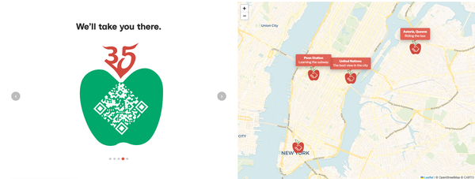
What makes it worth building is that growth costs almost nothing. More clips, more pins. A pilot needs a sheet of stickers, a shared inbox and ten willing greeters, and it scales from there without a budget line.
2 · The kickoff
To start the series, run an event at a major transit hub, the places visitors actually arrive: Grand Central, Moynihan, Port Authority, the Oculus. Build a video booth. Invite a New Yorker who already tells these stories on air. NY1’s Roger Clark is the obvious ask, since neighborhood features and local nonprofits are his whole beat, he has been covering all five boroughs since 2001, and he has lived in four of them.
Then put one question to everyone walking past: what is your favorite spot in this city? Every answer becomes a fifteen-second clip, and every clip goes up on the map live, during the event, so the crowd watches New York fill in in front of them.
What it starts is the real point. Greeters keep filming afterward and so does the public. Every clip is another pin, and every pin is another shop that wants a sticker in its window. That is the founding promise at a scale this organization has never been able to reach: a visitor standing anywhere in this city is never alone, because a New Yorker is already there telling them where to go.
Section 4Production notes
What was finished and handed over. Budget, hosting and launch sequencing lived in a separate operations memo, and none of it changes the work above.
- The brand kit: vector logo files, all three lockups, social cards, a one-color version and a favicon-scale test.
- The 3D masters: the apple re-renders to any crop, ratio or resolution in minutes, so new formats are a render rather than a commission.
- Seven pages, built. Not comps. Every screenshot in this document is a real page you can click through.
- The video library: shot and cut, waiting on final encodes.
- Type: Inclusive Sans, free and permanently licence-free, with Arial as the fallback that is already on every machine.
Photographs belong to their owners and appear here as documentation of the work. Screenshots taken July 2026.